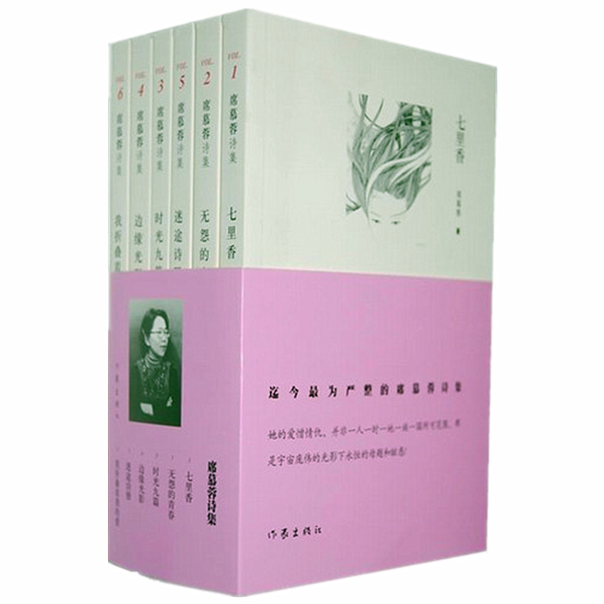

| 书名 | 席慕容诗集 |
| 作者 | 席慕容 |
| 类别 | 文学、诗歌 |
| 册数 | 全6册 |
| 页数 | 833 |
| 字数 | 883千字 |
| 出版社 | 作家出版社 |
| 出版时间 | 2010/9/1 |
作品简介
《席慕容诗集》收录了全6册诗集，包含《七里香》、《无怨的青春》、《时光九篇》、《边缘光影》、《迷途诗册》、《我折叠着我的爱》，席慕容的散文诗表现出来的是如幻似梦、似有若无、又远又近的境界。
目 录
- 《七里香》
- 《无怨的青春》
- 《时光九篇》
- 《边缘光影》
- 《迷途诗册》
- 《我折叠着我的爱》
作者简介
席幕蓉 祖籍内蒙古，出生在四川，童年在香港度过，成长在台湾。台湾师范大学艺术系毕业后，赴比利时深造。 1966年以第一名的成绩毕业于布鲁塞尔皇家艺术学院。专攻油画，曾获比利时皇家金牌奖，布鲁塞尔市政府金牌奖，1968年欧洲美协两项铜牌奖及1987年台湾中兴文艺奖章新诗奖等。 曾在国内外举行十余次个人画展。出版有诗集、画册、散文集及选本等五十余种。曾任台湾新竹师范学院油画及素描专任教授。现为专业画家，并为内蒙古大学、南开大学、宁夏大学、南通工学院、呼伦贝尔学院、呼和浩特民族学院等六校的名誉(或客座)教授。亦是内蒙古博物院荣誉馆员及鄂温克族、鄂伦春族的荣誉公民。